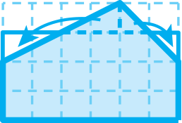
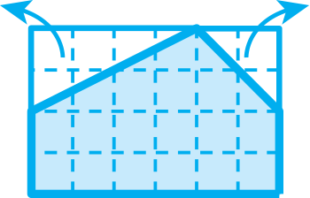

- 문제
- 계획
- 실행
- 반성
-
-
구하려고 하는 것은 무엇인가요?
다각형의 넓이를 구하는 여러 가지 방법을 알아보려고 합니다.
-
-
-
이름구한 방법
-
예슬기오각형을 직사각형으로 바꾸어
넓이를 구합니다.
60×30＝1800 (㎠) -
예연수오각형을 둘러싼 직사각형을 그려 넓이를 구한 후 삼각형 2개의 넓이를 뺍니다.(60×40)－(40×20÷2＋20×20÷2)＝1800 (㎠)
-
-
-
내가 구한 방법과 친구들이 구한 방법을 비교하여 이야기해 보세요.
예서로 땅의 넓이를 구한 방법이 달랐지만 넓이는 모두 같았습니다. -
넓이를 구하기 가장 편리한 방법은 무엇인가요?
예오각형을 잘라서 구하는 방법입니다. -
가장 새로운 방법은 무엇인가요?
예도형을 오각형보다 크게 만들어 넓이를 구한 다음 불필요한 부분의 넓이를 빼는 방법입니다.
-
-
-
느낀 점은 무엇인가요?
-